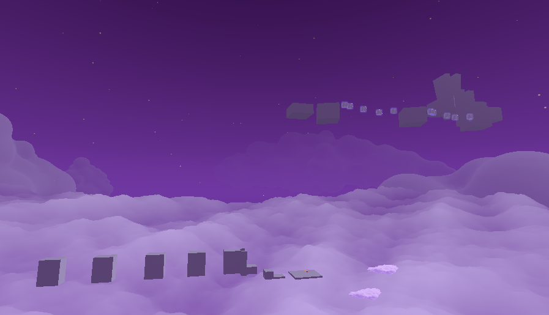
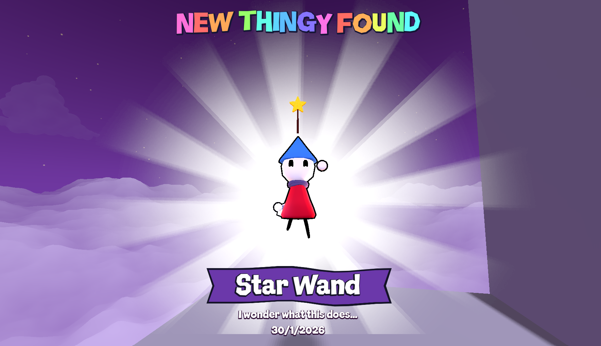
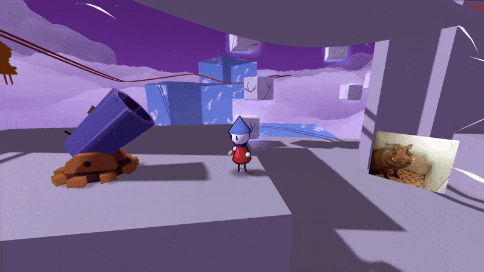
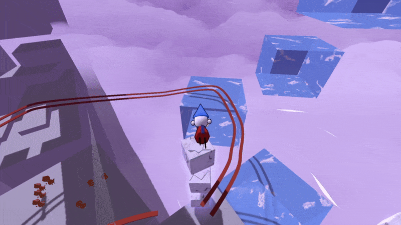
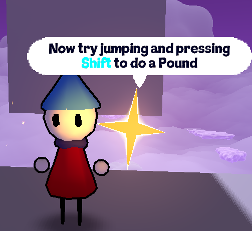
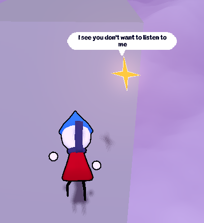
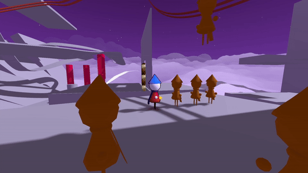

Hello and welcome to the first issue of the monthly Wizard Fella Islands newsletter!!!
The idea with this is that I will release monthly posts detailing what I worked on and what I will work on next in the game.
Big Dreams is the first island in the game and also acts as a tutorial. Guided by the Star Messenger you will learn the movement of the game. This month I worked on the first part by making the level and writing the tutorial dialogue.

Image of Big Dreams
As you can see from the image it is still in the stage where everything is a gray box. However it's almost finished, with only the final part missing. I hope I can finish it fully by next month and actually make it look good. Before that I would also like to get some people to playtest it so I can know whether the layout is good or not.
The thingies are random collectable items you will find at the end of every island. This is something that would've been a big part of the original Wizard Fella, so I decided to bring them back.

Image of picking up the Star Wand
So far there is no save system and no way to view what thingies you have which is why I want to work on the diary next month.

Idea for how the diary could look like
The diary will serve as the options menu but also like a way for you to view your progress. It is also another thing that I decided to bring over from the old game.
Cannons are a new prop that can be used to travel long distances in a cool way. If you jump into it you can rotate it using A/D keys and then charge using the Space key.

Cannons in action
Oh and you have to be careful not to hit your head when using the cannons.
Marble Blocks are props that I intend to use a lot in the game because they look cool, so this month I worked on adding more features to them. They now have options for being falling and being breakable.
If it's set to falling, then it will fall after you stand on it for a few seconds.

Marble blocks falling
If it's set to breakable, then it will break apart into pieces if you smash into it with a pound.

Marble blocks breaking
Dialogue
I worked on adding BBCode to the dialogue, which basically means I can give some parts of the text a cool effect.

BBCode Color Effect
So far I only have a color effect as there are still problems I haven't found a solution for.
I also added an interruption counter which NPCs can use to tell if you're interrupting them by skipping through the dialogue. This was mostly added for the Star Messenger in the tutorial but I'm sure I will find some other uses for it.

Annoyed Star Messenger
If you really want, you can make the Star Messenger shut up by interrupting it like 5 times.
ATTACKS
You can do three attacks in the game by clicking the left mouse button rapidly. Two are punches and the last is a ranged star attack. The star attack used to shoot farther based on how fast you were moving when you clicked but I changed that.

Charging the star attack
Now after two clicks, if you hold the left mouse button you can charge up the star attack.
PLAYER TRIGGERS
Player trigger is a new node that will do a certain event after a certain trigger from the player.
For example if the player does a Pound or Jumps, I can make an animation or a sound play.
It's just another tool that is already being really helpful in making the first level more interactive and I will continue to improve on it.
I hope you found some of this interesting and I hope to share even cooler stuff with you next month
Thank you for reading and until next time!!!
PS: I also have a post below this one explaining what Wizard Fella is, so you can read that if you wish to.
ok here's some music that will be used in the second part of the tutorial
unless i decide to change it which is possible but hopefully not